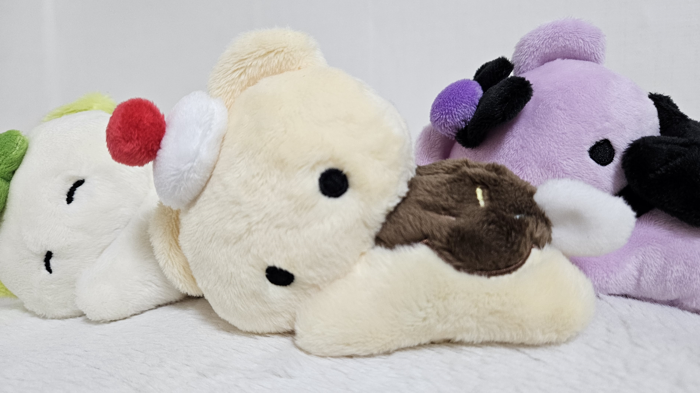
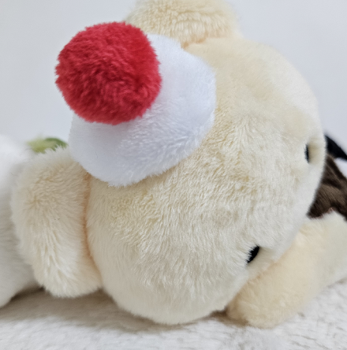
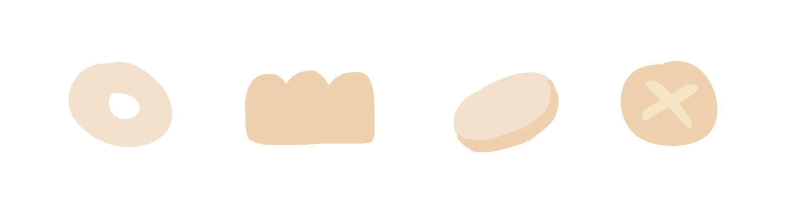
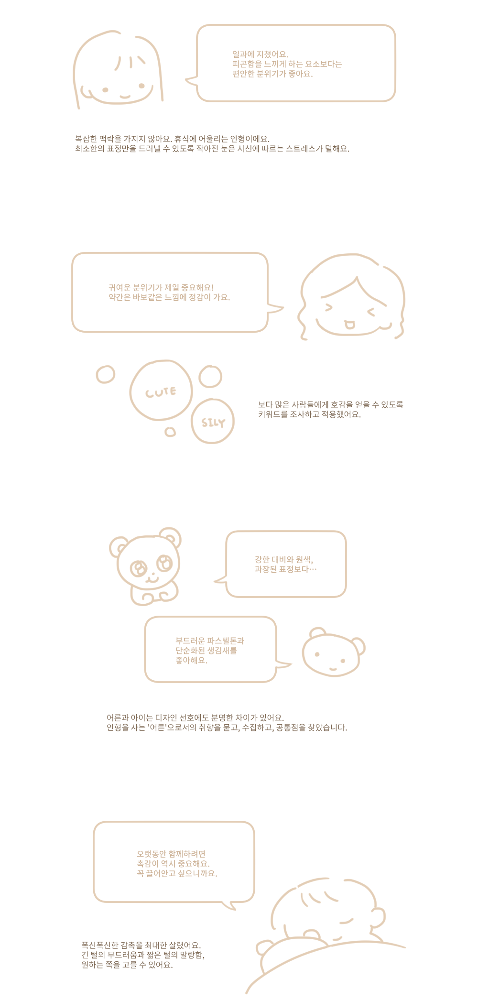
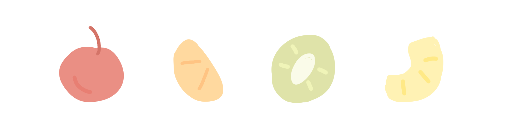

“꿈속에서는 뭐든지 될 수 있어.”
베니는 꿈과 여행을 사랑하는 작은 곰이에요.
어떤 곳을 걷고, 어떤 이야기를 부여하는지에 따라 색도 형태도 달라집니다.
함께했던 반려동물, 좋아하는 계절, 친구와의 추억을 전부 베니에게 속삭여주세요.
오늘 밤의 꿈에는 즐거운 일이 생길지도 모른답니다.
성인을 위한
애착인형 브랜드
재질부터 모양까지,
가장 좋아하는 모습으로
내가 사랑하는
조각들을 모아보세요.
어른의 시선에 맞춘
귀여움을 이야기합니다.
일상에 지친 사람들에게
휴식이 되어줄 인형.
무의미한 소비는 그만!
추억과 취향을 부여한
커스텀 디자인을
만나보세요.
다양한 무드의 굿즈들이
인형과 함께하는 공간을
조금 더 행복하게
만들어줄 거예요.

인형을 사랑하는 어른들은 점점 늘어나고 있어요.
우리 모두에게는 어린 시절이 있으니까요.
하지만 귀여움은 모두 같은 귀여움이 아니고,
우리의 눈은 어렸을 때와는 조금 달라졌습니다.
어른으로서 스스로 고르는 인형이 어떤 가치를 지녀야 하는지, 많이 고민하고 조사했습니다.
피로감은 덜하게, 사랑스러움은 더 크게.
절로 웃음이 나오게 만드는, 약간은 바보같은 인형 베니.
아낄 만한 인형이 되기 위해 베니는 오늘도 노력하고 있답니다.
어른이 되어 인형을 고르는 지금.

어떤 표정과 무드를 좋아하는지,
어떤 질감과 요소를 원하는지 설문조사를 통해 직접 물어보았어요.
1000명 이상의 사람들이 좋아하는 것에 대해 이야기해주었답니다.
인터뷰를 진행하고 많은 대화를 나누면서 베니의 형태를 잡아나갔습니다.

추억과 취향을 듬뿍 담아.

베니는 사람마다 다른 색과 형태를 가지고 찾아가요.
무엇을 좋아하는지, 어디에 점이 있는지. 털의 길이는 어떤지까지 고를 수 있습니다.
성격을 담을 수도, 좋아하는 특징을 담을 수도, 반려동물이나 사람과 닮게 만들 수도 있을 거예요.
원하는 모습으로 작은 곰을 만들고 키워드에 맞는 굿즈도 함께 받아보세요.